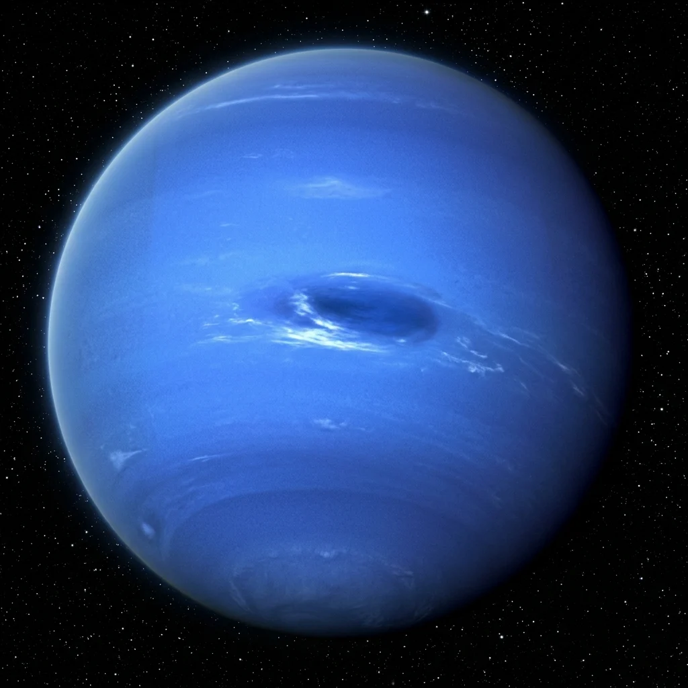

Found by Pure Math (1846)
Tiny gravitational tugs in Uranus’s orbit allowed Urbain Le Verrier and John Couch Adams to calculate Neptune’s position before Johann Galle spotted it.
Solar system voyage · Stop 9 of 10
Sunlight is faint here, yet clouds still race across the atmosphere. Distance does not mean stillness.
30.1 AU from the Sun · mean distance, rounded
Investigate the sunlight
Spacecraft-inspired view. Images are not a live view; sizes and star positions are not to scale. Select an image to examine it with the class.
Predict first: move twice as far from the Sun. How much light reaches the same area?
distance from the Sun
sunlight per m², compared with Earth
one-way light travel from the Sun
1 AU ≈ 150 million km. Model: sunlight ∝ 1 / distance²; light takes about 8.32 minutes per AU. These are Sun-to-location values, not Earth-to-spacecraft communication times. Atmospheres, temperature, and orbital eccentricity are not modeled. NASA solar system reference · NASA planetary distance table.
Does faint sunlight mean an atmosphere must be motionless?
No. Neptune has vigorous winds despite weak sunlight. Internal heat and atmospheric dynamics also matter.
Explain your answer using one observation from the image or lesson and one measurement from the sunlight experiment.
Planet Field Guide · Stop 9 · Ice Giant
Orbiting 30.1 times farther from the Sun than Earth, Neptune receives less than 0.11% of Earth’s sunlight—yet hosts the fastest winds in the solar system, screaming at up to 2,100 km/h. Predicted by math before it was ever seen through a telescope, Neptune anchors the inner edge of the Kuiper Belt.
Driving question: How can the farthest major planet power faster winds than Jupiter or Venus while receiving a thousand times less sunlight?
Interactive Lab · Retrograde Triton & Heat Budget
Unlike major moons formed in place around their planet, Neptune’s largest moon Triton orbits backwards (retrograde) on a tilted path—a smoking gun that Neptune captured it from the Kuiper Belt. Toggle the view to compare Neptune’s incoming solar energy against its internal heat output.
Interior Structure
Select each layer to inspect how Neptune’s internal structure resembles Uranus yet packs 17% more mass into a slightly smaller radius.
Discovery & Dynamics
Tiny gravitational tugs in Uranus’s orbit allowed Urbain Le Verrier and John Couch Adams to calculate Neptune’s position before Johann Galle spotted it.
Voyager 2 photographed dark nitrogen-ice geysers erupting 8 km high on Triton’s −235 °C cantaloupe-textured crust.
Transient Earth-sized anticyclonic storms appear and vanish over years, topped by bright white clouds of frozen methane crystal.
Spacecraft Exploration
Check Your Understanding
1. What evidence shows Neptune’s moon Triton was likely captured from the Kuiper Belt?
Choose an answer.
2. How was Neptune first discovered in 1846?
Choose an answer.